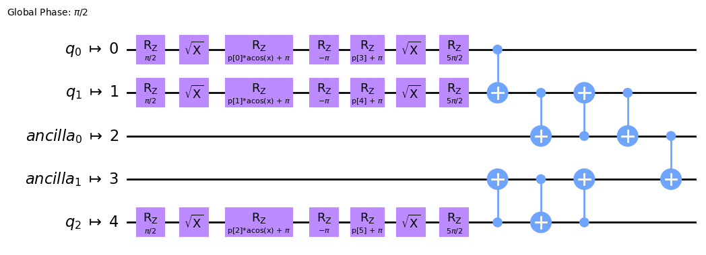

squlearn.encoding_circuit.TranspiledEncodingCircuit
- class squlearn.encoding_circuit.TranspiledEncodingCircuit(encoding_circuit: EncodingCircuitBase, backend: Backend, transpile_func: Callable | None = None, **kwargs)
Class for generated a Encoding Circuit with a transpiled circuit.
Example:
from squlearn.encoding_circuit import TranspiledEncodingCircuit,ChebyshevRx from qiskit_ibm_runtime.fake_provider import FakeManilaV2 fm = TranspiledEncodingCircuit(ChebyshevRx(3,1),backend=FakeManilaV2(),initial_layout=[0,1,4]) fm.draw("mpl")
- Parameters:
encoding_circuit (EncodingCircuitBase) – Encoding circuit to be transpiled.
backend (Backend) – Backend used for the transpilation.
transpile_func (Union[Callable,None]) – Optional function for transpiling the circuit. First argument is the circuit, second the backend. If no function is specified, Qiskit’s transpile function is used.
kwargs – Additional arguments for Qiskit’s transpile function.
- draw(output: str = None, feature_label: str = 'x', parameter_label: str = 'p', decompose: bool = False, **kwargs) None
Draws the encoding circuit circuit using the QuantumCircuit.draw() function.
- Parameters:
feature_label (str) – Label for the feature vector (default:”x”).
parameter_label (str) – Label for the parameter vector (default:”p”).
decompose (bool) – If True, the circuit is decomposed before printing (default: False).
kwargs – Additional arguments from Qiskit’s QuantumCircuit.draw() function.
- Returns:
Returns the circuit in qiskit QuantumCircuit.draw() format
- generate_initial_parameters(seed: int | None = None) ndarray
Generates random parameters for the encoding circuit
- Parameters:
seed (Union[int,None]) – Seed for the random number generator (default: None)
- Returns:
The randomly generated parameters
- get_circuit(features: ParameterVector | ndarray, parameters: ParameterVector | ndarray) QuantumCircuit
Return the circuit of the transpiled encoding circuit
- Parameters:
Union[ParameterVector (param_vec) – Input vector of the features from which the gate inputs are obtained
np.ndarray] – Input vector of the features from which the gate inputs are obtained
Union[ParameterVector – Input vector of the parameters from which the gate inputs are obtained
np.ndarray] – Input vector of the parameters from which the gate inputs are obtained
- Returns:
Returns the transpiled circuit in Qiskit’s QuantumCircuit format
- get_params(deep: bool = True) dict
Returns hyper-parameters and their values of the encoding circuit.
- Parameters:
deep (bool) – If True, also the parameters for contained objects are returned (default=True).
- Returns:
Dictionary with hyper-parameters and values.
- set_params(**params) None
Sets value of the encoding circuit hyper-parameters.
- Parameters:
params – Hyper-parameters and their values, e.g.
num_qubits=2